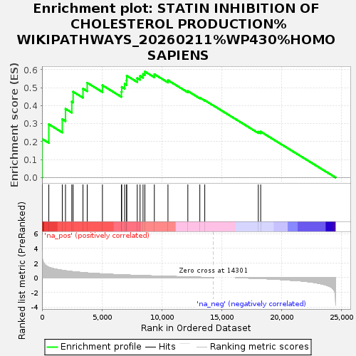
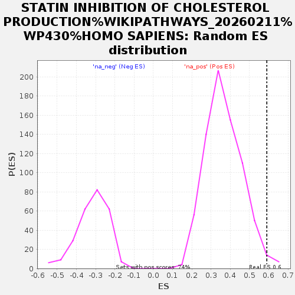

| Dataset | GvHD_A2_Ranks |
| Phenotype | NoPhenotypeAvailable |
| Upregulated in class | na_pos |
| GeneSet | STATIN INHIBITION OF CHOLESTEROL PRODUCTION%WIKIPATHWAYS_20260211%WP430%HOMO SAPIENS |
| Enrichment Score (ES) | 0.5900434 |
| Normalized Enrichment Score (NES) | 1.6043228 |
| Nominal p-value | 0.014804846 |
| FDR q-value | 1.0 |
| FWER p-Value | 1.0 |

| SYMBOL | RANK IN GENE LIST | RANK METRIC SCORE | RUNNING ES | CORE ENRICHMENT | |
|---|---|---|---|---|---|
| 1 | CYP7A1 | 15 | 2.937 | 0.2151 | Yes |
| 2 | FDFT1 | 568 | 1.419 | 0.2967 | Yes |
| 3 | MTTP | 1691 | 1.004 | 0.3246 | Yes |
| 4 | LIPC | 1959 | 0.938 | 0.3826 | Yes |
| 5 | LPL | 2484 | 0.834 | 0.4224 | Yes |
| 6 | HMGCR | 2596 | 0.814 | 0.4777 | Yes |
| 7 | DGAT1 | 3418 | 0.690 | 0.4948 | Yes |
| 8 | ACSS1 | 3771 | 0.641 | 0.5275 | Yes |
| 9 | LDLR | 5040 | 0.514 | 0.5134 | Yes |
| 10 | ABCG8 | 6622 | 0.387 | 0.4772 | Yes |
| 11 | APOC2 | 6650 | 0.385 | 0.5044 | Yes |
| 12 | ABCG5 | 6893 | 0.369 | 0.5216 | Yes |
| 13 | SCARB1 | 7053 | 0.357 | 0.5414 | Yes |
| 14 | SOAT1 | 7066 | 0.357 | 0.5671 | Yes |
| 15 | APOB | 7944 | 0.306 | 0.5537 | Yes |
| 16 | APOC3 | 8179 | 0.294 | 0.5658 | Yes |
| 17 | APOA5 | 8428 | 0.281 | 0.5763 | Yes |
| 18 | APOA4 | 8580 | 0.272 | 0.5900 | Yes |
| 19 | PDIA2 | 9370 | 0.237 | 0.5752 | No |
| 20 | APOA2 | 10506 | 0.175 | 0.5417 | No |
| 21 | APOE | 12164 | 0.100 | 0.4813 | No |
| 22 | APOC1 | 13164 | 0.054 | 0.4444 | No |
| 23 | PLTP | 13576 | 0.034 | 0.4301 | No |
| 24 | SQLE | 18042 | -0.102 | 0.2551 | No |
| 25 | ABCA1 | 18242 | -0.115 | 0.2554 | No |
